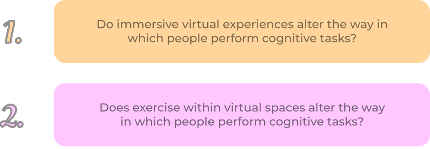
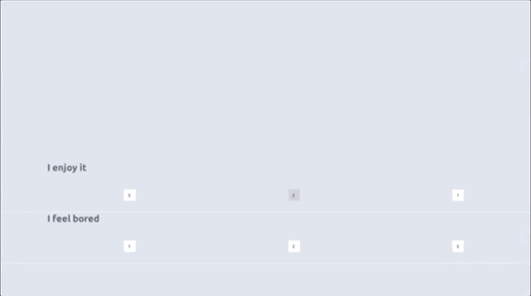

summary
With the rapid growth of the field of immersive technology and the surge in people’s online presences with the onset of the
pandemic, it is becoming increasingly important for us to understand how people think and function within virtual spaces.
This research study aims to address this issue through the creation of FitSaber, a game inspired by the popular VR game
Beat Saber but altered to fit the needs of this experiment, and has funding from Facebook Reality Labs and multiple CMU
research grants, including the SURF grant I received personally for the development of the game’s tutorial in the summer of 2021.
Data collection for the study will begin in spring 2022.
overview
Our study focuses on two main research questions:
FitSaber
Using Unity, our team developed FitSaber from scratch, a VR rhythm game where players have to slice incoming blocks in a
corresponding direction with a corresponding saber in accordance with the rhythm of a song.
In pursuit of our research questions, we implemented a Stroop effect into the game which, when turned on, requires
participants to slice blocks in the opposite direction of what the arrow on the block indicates. As the Stroop effect has
been extensively tested and confirmed in non-immersive contexts, our experiments strives to understand to what extent
the effect carries over in virtual reality.
We also implemented an exercise condition, which toggles between sedentary and aerobic versions of songs, utilizing elements
such as red zones that the player must dodge as well as the placement of incoming blocks to do so.
With these two treatment variables in place, stroop and exercise, FitSaber incorporates four experimental conditions shown below.
Other features:
- Integration with Beat Saber beatmaps
- Experimenter GUI for researchers to easily choose specific songs or conditions
- Tutorial for participants to learn and practice the game before testing
- Audio and visual feedback when playing
- Automatic scoring and data collection system with variables such as accuracy, score, and comparisons across conditions
Experimental Design
In order to collect background data and ensure that our sample has high internal and external validity, we also created pre-test and post-test cognitive batteries in Unity, which include demographic and behavioral surveys as well as attention tasks and conventional stroop tasks. Data from the batteries is automatically saved and exported to an Excel spreadsheet.

The experiment uses a within-subjects design, where each participant experiences all four treatment conditions, and accounts for
carry-over effects through counter-balancing (participants go through the conditions in a random order after getting used to the game
through the tutorial).
Participants will go through the study over five days and have their cognitive data collected through brain imaging techniques along
the way. Data collection will begin in the spring of 2022. Below is our progress presentation from the CMU Meeting of the Minds research
symposium in the spring of 2021.